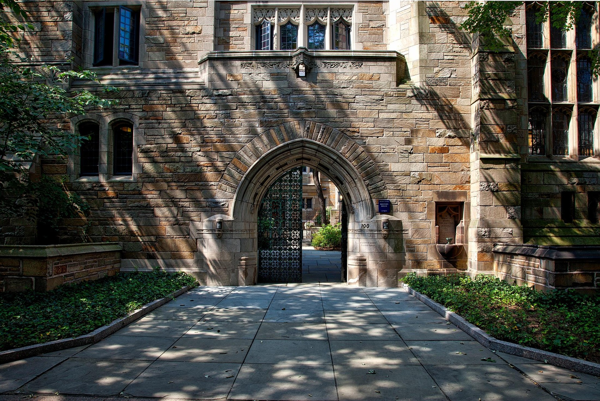

We offer a vast range of courses in high-demand fields like Technology (AI, Cybersecurity, Web/Mobile Dev), Business & Management (Digital Marketing, Finance, Project Management, Leadership), Creative Arts (Design, Media, Music, Animation), Healthcare, Languages, and Personal Development, with options from top universities and platforms like FutureLearn, Coursera, Udemy, and LinkedIn Learning, focusing on skills for job growth and future careers
Intermediate courses build on foundational knowledge, helping you develop specific skills in areas like tech (coding, Excel, AI), business (accounting, marketing), creative arts (design, music), or languages (English, Spanish), often bridging beginner gaps to advanced proficiency with practical application and deeper theory, suitable for career growth or personal interest
A degree is a formal qualification (like a Bachelor's, Master's, or Doctorate) from a university, earned by completing a structured program of study, while a course (or module/unit) is an individual subject within that program, such as "Biology 101" or "Introduction to Marketing," leading to a recognized credential in a specific field like Computer Science, Arts, or EngineeringF
A postgraduate course (or graduate degree) is any degree pursued after a bachelor's, including Master's PG Diplomas, Certificates, and Professional degrees in fields like Business, Tech, Arts, Health, and more, offering specialized skills, career advancement, and higher earning potential. These programs can be taught or research-based, with options ranging from 9 months to several years, depending on the specialization and country
Our Global Campus" refers to various university initiatives and platforms making education accessible worldwide, from Northeastern's network of physical locations and WSU's online offerings to specialized platforms like the Global Campus of Human Rights or AI tools for researchers, all focusing on international connection, flexible learning, and global perspectives.

University facilities encompass a wide range of spaces for learning, research, social life, and support, including modern classrooms, specialized labs (science, digital, art), extensive libraries, sports centers, student unions, residences, IT resources, and career services, all designed to enhance student experience and academic success
We are a premier global platform dedicated to indexing published international conference proceedings, manuscripts, and journals.
The "largest" playground depends on the definition, with Linnaeushof in the Netherlands often cited as Europe's largest family playground with 350+ attractions, world's largest inclusive playground.
Dark green vegetables (kale, spinach, broccoli) are packed with fiber, vitamins, and antioxidants. Whole grains (oats, brown rice, quinoa) offer essential fiber and nutrients, promoting satiety
Students often say they value supportive, enthusiastic teachers, flexible learning, diverse environments, and opportunities for personal growth, leading to increased confidence and valuable skills, with many highlighting strong campus communities and useful career preparation Common themes include improved English skills, making lifelong friends, gaining independence, and finding a path to success
A Story of Marie" most commonly refers to the 2014 French film Marie's Story (La Famille Bélier), about Marie Heurtin, a deaf-blind girl in late 19th-century France.
A Story of Marie" most commonly refers to the 2014 French film Marie's Story (La Famille Bélier), about Marie Heurtin, a deaf-blind girl in late 19th-century France.